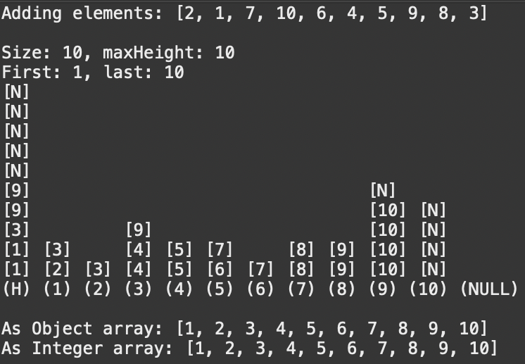

Terry Dyer
Java Skiplist Set

This was a project written in Java for my Computer Science 2 class. The objective of the program was to both gain experience with Java's Generic variable type and to create a custom Java set class. The image above is a program I made to test the set, and the visuals helped a lot while working on it.
Skills learned
- Basic operation, function, & implementation of a skip list.
- Java "set" classes
- Java Generics (both in use and understanding)